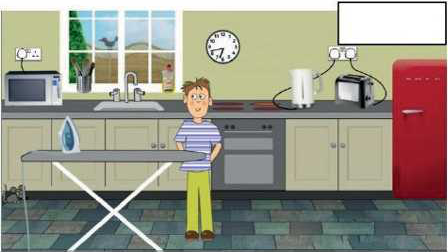
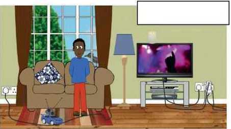
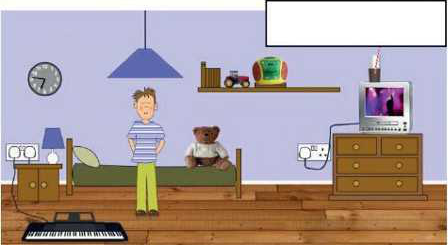
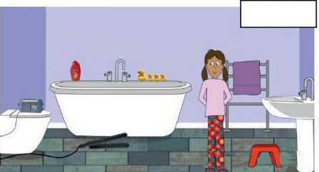

TEMATIKA 4: NJOHJA E RREZIQEVE3. Babai i Ditës është zjarrfikës
Puno në shtëpi
Ndihmë: si të punoj?
Zgjidh të gjitha përgjigjet e sakta. Mund të zgjedhësh më shumë se një. Kur të mbarosh, shtyp butonin “Dërgo”.
1.
Ne e përdorim shumë energjinë elektrike në shtëpi.
Zgjidh të gjitha vendet ku mund të ketë rrezik nga energjia elektrike.




Shpjego arsyet pse mund të ketë rrezik.